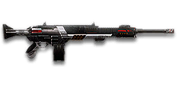

← Back to the T9 CARV comparison
Sage Guide · Terran Republic · Heavy Assault
The gun every TR Heavy Assault starts with. No certs spent, no unlocks needed — this page teaches you to win fights with it today.
The one-line verdict: a bullet hose with a 100-round magazine — the highest volume of fire of any starter LMG. It rewards holding a lane and punishes reloading at the wrong moment. Fight between 10 and 40 metres and it will carry you.

The T9 CARV · Terran Republic · 100-round box magazine
Picture the scene, because you've probably lived it: you're sprinting across a courtyard, an enemy appears, and you do everything at once — hold the trigger down while you're still running, then press aim-down-sights (ADS) a split-second later, finger still down. The sight picture snaps in, it looks precise… and your bullets spray everywhere except the man in your crosshair. He kills you. It feels like the game cheated. It didn't — here's what actually happened.
You started firing from a sprint, from the hip. Sprinting is the least accurate state in the game: your cone of fire starts at 7.0° — fully bloomed, the widest it can ever be. Every shot you fire from the hip widens it further still (+0.10° per shot).
Then you pressed ADS mid-hold — and nothing reset. Aiming down sights does not shrink a cone of fire that is already bloomed. The scope only gives you a precise picture; the bullets keep flying out of the wide cone you built while running and hipfiring. That's the whole mystery: accurate-looking aim, wildly inaccurate gun.
Two timers stack the deck further: your gun needs about 0.3 s to settle after a sprint, and raising the sight itself takes ~0.15 s. Trigger held through all of it means your first half-second of fire is pure confetti — and at 750 RPM, that's six wasted rounds before you've even started aiming.
1 · Feet. Let go of sprint (and the trigger, if you're already holding it). Stop, or drop into a strafe — anything but a full sprint.
2 · Sight. Press ADS and let the sight come up. This takes a heartbeat — that's fine, your overshield (F) covers it.
3 · Trigger. Now fire. Starting from the aimed cone of 0.1°, your first shots land where the dot points, and you control the bloom from zero instead of inheriting a maxed-out cone.
Stop → aim → fire. If you take one habit from this entire page, take this one. You'll practise exactly this rhythm in the simulator in section 04.
Every enemy infantry has 1,000 health (500 shield + 500 health). Your bullet does 143 damage up close, fading to 112 at long range. Headshots count double, leg shots count less (×0.9). That gives you three numbers worth memorising:
| Range | Damage | Head | Chest | Legs | Chest vs shielded Heavy |
|---|---|---|---|---|---|
| Close · 0–10 m | 143 | 4 | 7 | 8 | 11 |
| Mid · 10–42 m | 143→125 | 4 | 8 | 9 | 12 |
| Far · 42–65 m+ | 125→112 | 5 | 9 | 10 | 13 |
Perfect-accuracy times to kill: 4 headshots ≈ 0.24 s, 7 chest shots ≈ 0.48 s up close. In real fights you'll land maybe half your rounds — still, this is why the head matters so much on this gun. And notice the shielded-Heavy column: another Heavy with his overshield up takes 11 chest shots up close, not 7. Your shield is worth the same to you — keep it on before corners.
Full power to 10 m, then a steady slide to minimum at 65 m. The gold line shows Soft Point Ammunition, which stretches full power to 15 m.
One gun, four fighting styles. The right technique changes with distance — use the range finder below to see what your bullets do at any range, then learn the four bands underneath it.
How to fight hereAim down sights at the upper chest and neck. Fire in bursts of 5 — your recoil climbs straight up into the head for free damage.
Aim: centre of the chest, from the hip. Keep moving.
Scoping in costs you time and halves your move speed — at arm's length that gets you killed. The CARV's hipfire is the loosest of any starter LMG (section 05 shows why), so stay close, strafe side to side (A/D) while firing so you're hard to track, and let the overshield soak the return fire. Your 100-round magazine means you can afford to keep the trigger down here.
Aim: neck / upper chest. Bursts of 5 rounds.
This is where the gun earns its keep: full 143 damage, 750 RPM, and the fastest time to kill of any starter LMG. Start your crosshair at the neck — the natural upward climb walks your shots into the head, and 4 head hits end the fight in a quarter of a second. Strafe while scoped; you're slower, but a moving target still beats a still one.
Aim: chest. Bursts of 5 rounds, pause between them.
Damage is sliding toward 125 and your cone of fire blooms if you hold the trigger. Fire a burst, release for a split second to let accuracy reset, fire again. The recoil climbs straight up (0° angle — no sideways bias), so pull your mouse gently straight down. Crouch or stand still when you can — both tighten your shots.
Aim: chest. Taps of 3–5 rounds at exposed targets only.
At 112 damage you need 9 chest hits — a long, loud advertisement of your position. Take these shots at stationary or fleeing targets, medics reviving, and engineers on turrets. Otherwise, your better play is to close the distance behind cover. Knowing when not to shoot is a skill too.
Your accuracy is decided by two things before skill even enters it: what your body is doing (your stance sets the starting cone of fire) and what your finger is doing (holding the trigger grows that cone with every shot). The T9 CARV has no fire-mode switch — full-auto only — so "firing modes" are something you do with your finger, not a setting on the gun.
| Stance | Starting cone | What it means for you |
|---|---|---|
| Sprinting | 7.0° | Maxed out — the widest the cone can be. This is the section 01 disaster: never start firing from a sprint. |
| Hipfire, moving | 4.5° | Walking or strafing from the hip. The loosest hipfire of any starter LMG — fine inside ~8 m, leaks rounds past the target beyond it. |
| Hipfire, standing | 4.0° | Your point-blank default. The 0.56 m ring at 8 m in section 05 is this stance drawn out. |
| Hipfire, crouched | 3.5° | The tightest hipfire you have (4.0° if you crouch-walk). Crouch when holding a doorway from the hip. |
| Aimed (ADS), feet planted | 0.1° | Standing or crouched makes no difference here — forty times tighter than hipfire. This is why section 01's order matters. |
| Aimed (ADS), strafing | 0.4° | Four times wider than standing still, and you move at half speed (0.5×). But here's a free gift: standing still, your cone only grows to 0.4° after 6 shots of bloom (0.05° each) — so plant your feet for the opening burst, then strafe between bursts to stay hard to hit. |
| Mode | How your finger does it | Use it at |
|---|---|---|
| The mag dump | Hold the trigger and don't let go | Point blank only, or suppressing a doorway. Bloom maxes out fast — past ~8 rounds you're spraying, not aiming. Your 100-round magazine makes this tempting; resist it past 8 m. |
| Bursts — the default | Hold for 5 rounds, release ~0.15 s, hold again. 6–8 rounds is fine while you're learning | Almost everything, 8–50 m. Each release resets the cone, so every burst starts at 0.1°. |
| Tap-fire | Short taps of 3–5, or single clicks, with a real pause between | 50 m and out, at exposed or stationary targets. Slow, but every round goes where the dot is. |
A target 30 m away, aiming down sights. Press and hold FIRE (mouse, touch, or hold Space with the button focused) and watch the holes walk wider the longer you hold — that's firing from an ever-growing cone. Release, let the cone reset, fire again. Aim for bursts of 5; 6–8 is tolerable while you're new. This practice window is shared by the whole Sage series: it's driven by a weapon profile plugged into the window — here the T9 CARV's (750 RPM, 0.1° starting cone, 0.05° bloom per shot, target at 30 m) — and the spread is drawn at true scale from those numbers.
Cone of fire — fills as you hold, empties when you release.
Your bursts will be graded here — green at 5 rounds, tolerable up to 8.
Some things are easier to show than to say. Here's what your bullets actually do: how wide hipfire spreads at 8 metres, what a good burst rhythm looks like, and what the 2x sight really changes. The hands-on version — holding the trigger yourself — is the practice window in section 04.
A full-size target 8 m away — an arm's-length room fight. The rings show where hipfire rounds land around your aim point (the chest). Sizes are drawn to scale from the gun's real cone-of-fire numbers.
Read it this way: standing still, the 0.56 m ring is wider than the chest — even standing still, edge rounds leak past him, which is why the CARV's hipfire is the weakest of the four starters. Move and it grows to 0.63 m, and the rings only grow with distance while the man doesn't. Past ~10 m that's rounds missing entirely: the exact moment to switch to aiming down sights, where the spread shrinks to a dot. The Laser Sight pulls the standing ring down to 0.37 m — roughly the chest — which is why it's the one attachment that genuinely changes your close-quarters game. (Ring sizes use the real geometry: spread diameter = 2 × distance × tan(cone ÷ 2).)
Every shot widens your cone of fire ("bloom"). Releasing the trigger for a heartbeat resets it. Same 18 rounds, two very different outcomes:
The target pattern is bursts of about 5 rounds — that's the ideal. Bursts of 6–8 are fine while you're new (call it newbie tolerance). Past that, the bloom (0.05° per shot aimed, 0.10° from the hip) keeps growing with every shot, so the extra bullets mostly decorate the wall behind your enemy instead of hitting him. Short bursts also leave you rounds for the second enemy — and with a 100-round magazine, a disciplined CARV can drop three or four enemies without ever reloading.
No zoom. The target at 35 m is small but the view is wide open — you see the crate, the tower, and the next enemy coming. Fast to aim, nothing blocks your edges. Best inside ~40 m.
Same target, same 35 m — but he looks twice as tall, so placing shots on his chest and head gets much easier. The price: your view narrows to the round window, the crate and tower are gone, and close targets feel fast and huge. Best at 25–50 m.
That's the whole 5-cert decision from section 06 in one picture: 1x for awareness, 2x for precision. Most veterans carry both and swap per base — indoors 1x, open ground 2x.
Good news: your two most important attachments — the 1x reflex sight and the Forward Grip — are already on the gun, free. Everything below is an optional sidegrade, not an upgrade. Buy in the order shown and stop whenever the gun feels right.
One trap to avoid before you spend anything: High Velocity Ammunition and the Extended Magazine do not exist for this gun — they belong to the T9 CARV-S (1,000 certs), and your 100-round magazine is already the biggest of any starter LMG. If a loadout video tells you to buy them for the starter CARV, it's talking about the S variant, not yours.
A clean red-dot sight with no zoom. Your default, and honestly your best all-round option.
Good: everywhere indoors and out to ~40 m — which is most PlanetSide fights.
Bad: picking out targets past 50 m; that's what the 2x is for.
Doubles your view magnification. Costs almost nothing — the price of one kill or two.
Good: open-field bases, tower fights, and your 25–50 m burst game. Swap between 1x and 2x per fight.
Bad: tight indoor rooms — the zoom makes close targets feel fast and huge.
Night-vision sight: enemies glow white against a dark view, and it sees through smoke.
Good: night fights, smoky doorways, spotting infiltrators by their outline.
Bad: daytime and long range — its view is short-ranged and washes out in bright light.
DMO / HDS (3.4x) and TMS / ACS (4x) — sniper-style magnification on an automatic LMG.
Good: almost nothing a beginner does — recoil magnifies too, and tunnels your vision.
Bad: any fight inside 30 m, which is where you'll spend your first hundred hours.
The CARV's recoil climbs straight up with no sideways bias, and the Forward Grip already handles the sideways walk. Plenty of veterans run this slot empty forever.
Good: your first weeks. Spend certs on your suit and shield first.
Bad: nothing — there's no downside to an empty slot.
Cuts vertical recoil by 30%. Costs you: hipfire spread grows 15%, and enemies see you on the minimap from 35 m farther away when you fire.
Good: if you mostly aim down sights at mid-range and the upward climb bothers you — at 750 RPM with a 2.0x first-shot kick, the climb is real.
Bad: hipfire builds and sneaky play — your hipfire is already the loosest of any starter, and this makes it looser while shouting your position to the map.
Hipfire bloom grows 40% slower — much steadier hip spraying. But vertical recoil rises 20% when you do aim.
Good: a dedicated close-quarters build paired with the Laser Sight.
Bad: general play — it taxes the aimed shooting you'll do most.
You vanish from the minimap when firing and your shots are quiet. In exchange, damage starts dropping off 20 m sooner and bullets fly 15% slower (600 → 510 m/s) — harder to lead moving targets.
Good: flanking behind enemy lines, rooftop and tree work, solo play behind the front.
Bad: front-line fighting where everyone already knows where you are — you pay the damage cost for stealth you don't need.
Hides your muzzle flash so your own view stays clear at night — but you appear on enemy minimaps from 15 m farther away.
Good: night fights where your own flash blinds you. A comfort pick, nothing more.
Bad: as an early purchase — it changes no fight outcome. Buy it last, if ever.
Cuts side-to-side recoil by 25%, keeping your bursts on a single target. Tiny cost: weapon swap is 0.15 s slower.
Good: the default for aimed, mid-range play — leave it on until you deliberately build for hipfire. On the CARV it matters more than on most guns, because your sideways walk (0.9° tolerance) is the worst of any starter LMG.
Bad: nothing meaningful. It only stops helping if you never aim down sights.
Hipfire accuracy improves by a third (33% tighter cone) — your 8 m standing ring shrinks from 0.56 m to 0.37 m. Replaces the Forward Grip — you can't have both.
Good: indoor point-holds and stairwell fights where you hipfire inside 8 m. The single biggest fix for this gun's weakest stat.
Bad: open bases — you give up aimed recoil control for a bonus you rarely use.
The first shot of each burst kicks 60% less — but side-to-side recoil rises 10% on everything.
Good: disciplined burst and tap-fire at 40 m+, where every burst starts fresh. Your first shot kicks twice as hard as a normal shot (2.0x), so this earns its keep sooner on the CARV than on gentler guns.
Bad: beginners' longer bursts — the sideways penalty hurts exactly when your finger stays down too long.
A torch whose beam reveals cloaked infiltrators. Toggle it with the attachment key (X by default).
Good: hunting a stalker infiltrator camping your capture point — sweep corners with it.
Bad: as your everyday rail — it gives zero accuracy help, and the beam advertises your position.
Full 143 damage now reaches to 15 m instead of 10 m (the gold line on the chart above). Cost: bullets fly 10% slower (600 → 540 m/s).
Good: nearly always — most duels happen at 10–20 m, exactly where this extends your 7-shot / 4-headshot kill.
Bad: long-range duels against runners, where the slower bullet needs more lead. A small price.
0 certs · Day one
What the game hands you. Genuinely good — learn the gun on this before spending anything.
105 certs · Recommended
The best value in this whole guide. Covers every fight from a doorway to a tower courtyard.
200 certs · Indoor brawler
Built to hipfire down stairwells and hold a capture point room. Swap back to the All-Rounder outdoors.
200 certs · Flanker
No minimap blip, quiet shots, tight hipfire for the kills you take from behind. Weak in a fair fight — so don't take fair fights.
Your overshield (F key) is extra health that only helps if it's on before the bullets arrive. Hear footsteps or expect a corner? Shield up, then peek. A shielded Heavy needs 11 chest shots to drop up close instead of 7 — that gap wins duels.
Headshots deal double damage: 4 kills up close versus 7 to the chest, in 0.24 s instead of 0.48 s. Don't aim at the head directly — aim at the neck and let the gun's natural upward climb carry shots two and three into the skull. It's the single biggest damage upgrade you own, and it's free.
Every shot widens your cone of fire. Holding the trigger past ~8 rounds at range means later bullets fly around your target, not into it. Five rounds is the ideal burst; release the trigger for a heartbeat between bursts — your accuracy resets and your hits per magazine roughly double.
Reloading with even 1 bullet left takes 5.4 s; an empty gun takes 6.2 s — an eternity mid-fight, and the longest reload of any starter LMG. Count roughly: after two or three kills or ~60 rounds, duck behind cover and reload early. Treat the last 20 rounds as your emergency reserve, not your working magazine.
Walk with your crosshair at head height, pointed where an enemy's head will appear — a doorway edge, a corner, stairs. Most beginners lose fights in the half-second spent dragging the crosshair onto target. While firing, tap A/D to strafe: a moving Heavy is dramatically harder to headshot back.
Your damage, fire rate and shield all shine at close-mid range. Sprint between cover, use buildings and rocks as stepping stones, and arrive at your range before opening fire. The player who chooses the range usually wins the duel — make it you.
Every gun has a price. Here's where the T9 CARV pays — and the habit that covers each hole.
4.0° standing and 4.5° moving, against 2.5° for the Orion and XMG-100. Even standing still at 8 m, your spread ring is wider than a man's chest.
Play around it: aim down sights sooner than players of other factions do, and treat the Laser Sight build (section 07) as your indoor loadout, not a gimmick.
5.4 s with rounds left, 6.2 s on empty — the slowest of the four starters, by a wide margin. The 100-round magazine is the compensation, but an empty CARV is a six-second liability.
Play around it: reload early and only in cover (habit 4). The magazine is deep on purpose — use the depth, don't test the reload.
143 damage means 7–9 chest shots to kill — the most of any starter LMG. The GD-22S needs 6–8, and every miss costs you a bigger share of the kill.
Play around it: headshots (habit 2) cut the kill to 4–5 hits, and your 750 RPM means those hits arrive faster than anyone else's. Don't take fair long-range trades where the extra bullets matter most.
Its horizontal tolerance is 0.9° — more than double the GD-22S and XMG-100 (0.4°). The recoil itself climbs straight up (0° angle, no sideways bias), so the sideways drift of a long burst is the whole problem.
Play around it: pull your mouse straight down while firing, keep the free Forward Grip on (−25% horizontal recoil), and burst in 5s so the walk never builds.
Like all LMGs, you move at half speed while aiming down sights (0.5x), and the gun takes 1.2 s to swap to — slow if a fight surprises you with your rocket launcher out.
Play around it: hipfire inside 8 m instead of scoping (that's the Point Hold build's whole idea), and swap weapons behind cover, never in the open.
This guide is TR-only, but your enemies aren't. An NC Heavy starts with the GD-22S, a VS Heavy with the Orion VS54, and a Nanite Systems Operative — the robot soldier — is handed the XMG-100 automatically. Same job, four different trade-offs — here's yours next to theirs, from the same data feed.
| Stat | T9 CARV TR · you | GD-22S NC | Orion VS54 VS | XMG-100 NSO · auto-granted |
|---|---|---|---|---|
| Damage per bullet | 143 → 112 | 167 → 125 | 143 → 112 | 143 → 112 |
| Fire rate | 750 RPM | 577 RPM | 750 RPM | 714 RPM |
| Magazine | 100 | 50 | 50 | 80 |
| Reload (rounds left) | 5.4 s | 2.3 s | 3.0 s | 4.5 s |
| Bullet velocity | 600 m/s | 620 m/s | 540 m/s | 500 m/s |
| Chest shots to kill | 7 / 8 / 9 | 6 / 7 / 8 | 7 / 8 / 9 | 7 / 8 / 9 |
| First-shot ADS cone | 0.10° | 0.03° | 0.10° | 0.10° |
| Hipfire cone, standing | 4.0° | 3.0° | 2.5° | 2.5° |
| Horizontal walk | 0.9° | 0.4° | 0.8° | 0.4° |
| Move speed while aiming | 0.5× | 0.5× | 0.5× | 0.5× |
Shots to kill are shown close / mid / far, matching the three bands in section 02. Your edge in one line: the fastest fire rate, the fastest time to kill in every band, and double the magazine of the GD-22S and Orion. Your price: the weakest bullets, the loosest hipfire, the worst sideways walk, and the longest reload of the four.
Your headline advantage is real: up close you kill in 0.48 s to the GD-22S's 0.52 s, and the gap grows with range because the GD-22S needs one fewer bullet but fires much slower. The Orion is your mirror image — same damage, same fire rate, same time to kill in every band — so it differs from you in magazine, reload and handling, not in this table.
| Range band | T9 CARV · you | GD-22S | Orion VS54 | XMG-100 |
|---|---|---|---|---|
| Close · 0–10 m 7 / 6 / 7 / 7 shots |
0.48 s | 0.52 s+8.3% · 40 ms slower | 0.48 sidentical | 0.50 s+5.0% · 24 ms slower |
| Mid · 10–42 m 8 / 7 / 8 / 8 shots |
0.56 s | 0.62 s+11.4% · 64 ms slower | 0.56 sidentical | 0.59 s+5.0% · 28 ms slower |
| Far · 42 m+ 9 / 8 / 9 / 9 shots |
0.64 s | 0.73 s+13.8% · 88 ms slower | 0.64 sidentical | 0.67 s+5.0% · 32 ms slower |
Percentages are worked from the exact times in milliseconds — GD-22S 520 / 624 / 728 ms, T9 CARV 480 / 560 / 640 ms, Orion 480 / 560 / 640 ms, XMG-100 504 / 588 / 672 ms — so they won't match exactly if you redo them from the rounded seconds. Read the pattern: the GD-22S falls further behind as range grows. The XMG-100 is exactly 5% slower than you in every band, because its 84 ms gap between shots is exactly 5% wider than your 80 ms.
Nobody fires the instant an enemy appears. A typical duel adds about 150 ms of human reaction plus about 50 ms of ping — 200 ms of overhead before the time-to-kill clock even starts. Both players pay it, so it shrinks every percentage gap above.
| Range band | T9 CARV · you | GD-22S | Orion VS54 | XMG-100 |
|---|---|---|---|---|
| Close · 0–10 m | 0.68 s | 0.72 s+5.9% (was +8.3%) | 0.68 sidentical | 0.70 s+3.5% (was +5.0%) |
| Mid · 10–42 m | 0.76 s | 0.82 s+8.4% (was +11.4%) | 0.76 sidentical | 0.79 s+3.7% (was +5.0%) |
| Far · 42 m+ | 0.84 s | 0.93 s+10.5% (was +13.8%) | 0.84 sidentical | 0.87 s+3.8% (was +5.0%) |
The ± matters more than the headline. That 200 ms is an average, not a promise: reaction time easily swings 100–250 ms with surprise, fatigue and who saw who first, and ping varies by server and connection. Up close, your whole advantage over the GD-22S is 40 ms — smaller than the normal wobble in your own reaction, and over the XMG-100 it's just 24 ms. React a fraction sooner, pre-aim the doorway (habit 5), or land one headshot, and it's gone. At range your edge over the GD-22S grows to 88 ms — nearly one of its 104 ms shot intervals — so range is where you press it: keep bursting, keep your shield up, and the numbers stay yours. Against the Orion there is no number to press: identical time to kill in every band means the duel is decided by aim, shield, and who saw who first — not the gun.
The hammer. 167 damage, 6 shots to kill against your 7, the tightest first-shot cone here (0.03°) and the least sideways walk (0.4°) — but the slowest fire rate and a 50-round magazine.
How you beat it: you kill faster in every band (0.48 s to 0.52 s up close) and your magazine is double its size, so you can keep firing through the second enemy while it's already reloading. Don't let the duel become a precision contest past 25 m, where its cone wins — close in and let volume do the work.
The mirror. Same damage, same fire rate, same time to kill as you in every band — but a 50-round magazine, a much tighter hipfire cone (2.5° vs your 4.0°), and slightly less sideways walk.
How you beat it: don't hipfire-duel it under 10 m; that's its home turf. From about 15 m out, fight aimed and let your 100-round magazine do the talking — pre-fire corners, take two enemies without reloading. Its reload is 3.0 s to your 5.4 s, so reload early and never on empty: you can't win a reload race against it.
The robot's gun. What every Nanite Systems Operative is handed on day one: 143 damage at 714 RPM with an 80-round magazine and the tightest standing hipfire here (2.5° cone vs your 4.0°) — but the slowest bullets of the four (500 m/s) and a long 4.5 s reload.
How you beat it: you're exactly 5% faster to kill in every band (24–32 ms), and your bullets fly faster (600 vs 500 m/s) so you lead runners less. It also kicks hardest per shot (2.5× first-shot recoil), so its opening burst climbs the most — stay at 15–40 m where that matters, and punish the reload: at 4.5 s, an XMG that just emptied its drum is defenceless — push it.
The hose. The highest volume of fire of any starter LMG: 750 RPM and a 100-round magazine. Fastest time to kill in every band, and the only starter that can drop three or four enemies without reloading.
Your discipline: every bullet is the weakest here (143), so you need 7–9 hits, and the sideways walk (0.9° tolerance, worst of the four) is what actually throws your bursts off — the Forward Grip is free and already on the gun, so keep it, and burst in 5s. A miss costs you 80 ms; a miss costs a GD-22S player 104 ms. That's the whole gun in one fact: volume forgives you, but only if you aim first.
Open the world map, travel to VR Training, and run these on the target dummies. Five minutes before a play session beats an hour of dying confused.
Aim at a wall 20 m away and empty a full magazine without touching the mouse. Watch the bullet pattern climb straight up — that's your gun's fingerprint (0° recoil angle, no sideways bias). Repeat, this time pulling straight down, until the group stays fist-sized.
Walk the dummy range keeping your crosshair glued to neck height the whole time, snapping to each new target without dipping to the floor or sky. Slow and clean first; speed comes on its own.
At 30–40 m, kill dummies with bursts of 5, releasing the trigger fully between bursts. If a burst goes wide, shorten it. Goal: whole kills without a single wild round.
Pick a dummy, stand 5 m away, and circle it with A/D while hipfiring it down without stopping. This is your point-blank survival skill — and it matters more on the CARV than on any other starter, because your hipfire is the loosest of the four.
Fire exactly 60 rounds, step behind a pillar, reload, repeat. Train your hands to reload early and only in cover until it's automatic — with a 5.4 s reload, in real fights you'll do it without thinking, which is the point.